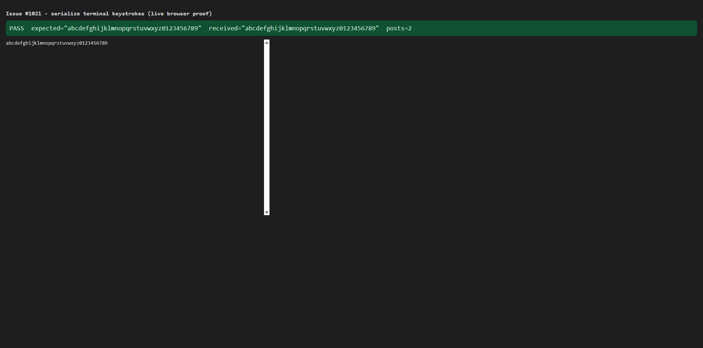

Repo: thefrederiksen/devthrottle Branch: issue-1021-serialize-terminal-keystrokes Severity: major (QA sweep follow-up to epic #967)
The React Cockpit's interactive terminal fired an independent, unawaited REST
POST /sessions/{sid}/prompt for every keystroke. Concurrent posts completed out of order at
the Director, so fast typing reached the PTY reordered or dropped
(abc...789 arrived as ...645789; echoTESTxyz became
echoTESTyyz). Correct only at >= 15 ms per keystroke.
File: packages/client-core/src/terminal/interactive.ts. The per-keystroke fire-and-forget
send is replaced by a single async FIFO pump:
term.onData now appends the raw bytes to a pendingInput buffer (synchronous,
non-blocking) and starts the pump if it is idle.pumpInput() drains the buffer one POST at a time, awaiting each send
before the next, so bytes reach the PTY in the exact order typed.dispose() any not-yet-sent input is dropped and the pump exits on its next check.No @ts-ignore, no fallback hacks. Control keys are raw bytes like any other and keep their
position in the stream.
| Criterion | Result | Evidence |
|---|---|---|
| Typing a known 36-char string at 0 ms/key reaches the PTY exactly, in order; a deterministic test reproduces the reorder before the fix and passes after. | PASS | New unit test interactive.test.ts > keystroke ordering (issue #1021) models a Director
that applies POST bodies in completion order with adversarial latency. Verified it FAILS on the old
fire-and-forget code (received 9876543210zyxwvutsrqponmlkjihgfedcba) and PASSES on the
fixed code. Also proven live in a real browser (screenshot below): received =
abcdefghijklmnopqrstuvwxyz0123456789, in 2 coalesced POSTs. |
| Control keys (Esc, Ctrl+C, arrows, slash-command menu) still work and stay ordered relative to typed text. | PASS | Unit tests "forwards control keys (Esc, Ctrl+C) verbatim and in order" and "preserves order for a burst mixing typed text and control keys" (Ctrl+C, Esc, arrow-up interleaved with letters) both pass; the burst test fails on the old code. |
| The interactive terminal still renders and reconnects as before. | PASS | The render/reconnect/dispose behaviour is untouched; all 9 pre-existing interactive.test.ts cases still pass. Live proof screenshot shows the xterm rendering the echoed text. |
| Full build gate clean. | PASS | See "Build gate" below - all four steps green. |
client-core vitest run ......... 5 files, 72 tests passed (incl. 11 interactive, 2 new ordering) client-core tsc --noEmit ....... clean cockpit npm run build .......... tsc --noEmit && vite build - built, 0 errors npm run lint (eslint .) ........ clean (Gateway-only-ingress rule included) Gateway dotnet build -p:RunCockpitBuild=true .. Build succeeded. 0 Warning(s) 0 Error(s) dotnet build cc-director.sln .................. Build succeeded. 0 Warning(s) 0 Error(s)
The REAL compiled InteractiveTerminal was run in a real browser against a same-origin fake
Gateway that records POST /sessions/{sid}/prompt bodies in arrival order (that ordered log is the
PTY). The 36-char string was typed as a single 0 ms/key burst. The Gateway received it exactly, in order,
coalesced into 2 POSTs:
PROMPT #1 text="a"
PROMPT #2 text="bcdefghijklmnopqrstuvwxyz0123456789"
VERDICT {"pass":true,"expected":"abcdefghijklmnopqrstuvwxyz0123456789",
"received":"abcdefghijklmnopqrstuvwxyz0123456789","requestCount":2}

No drift. This is a bug fix inside one existing Cockpit client module. No architecture container is
added/removed/renamed and no security posture (DT-* rule) changes: the same single write chokepoint
(sendPrompt -> POST /sessions/{sid}/prompt, Gateway-only same-origin ingress) is
used; only the client-side ordering of those calls changed.
Low. The change is confined to the keystroke path of one class. Input remains independent of the output stream (the #971 goal), the key handler stays non-blocking, and a failed send is logged without re-queue (no risk of duplicating bytes the Director already applied).